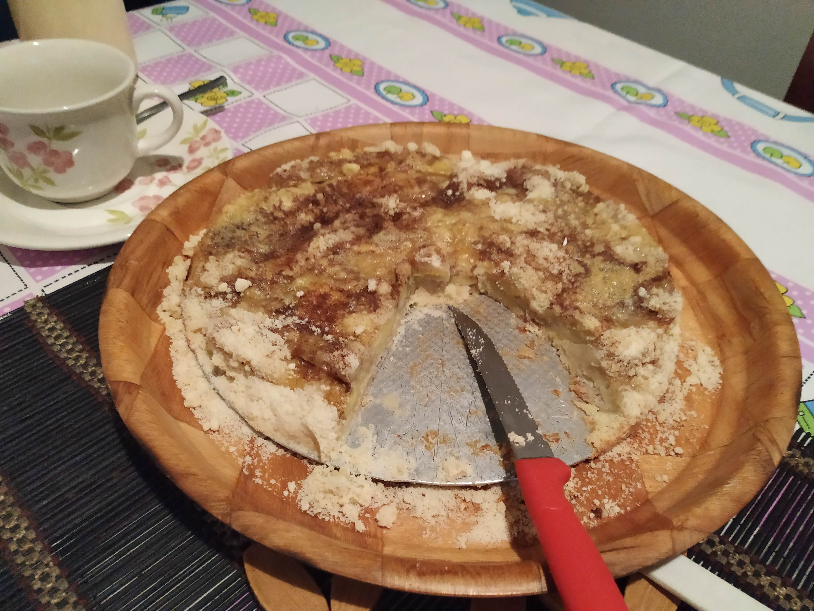

Torta de Banana
Ingredientes
- 2 xíc. de farinha de trigo
- 1 xíc. de açúcar
- 1 colher de manteiga
- 1 colher de banha
- 1 ovo
Modo de Preparo
Misturar todos os ingredientes e forrar uma forma. Cortar as bananas em rodelas, colocar sobre a massa e assar, se sobrar massa pode colocar em tiras sobre as bananas.
Obs.: essa massa pode ser usada para torta de coco e queijadinha
